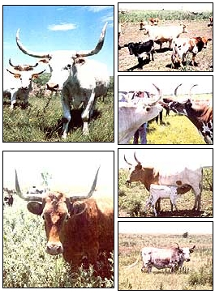

Its history is as rich as the days of the Golden West . . . yet this unique breed of cattle nearly became extinct. Fortunately, though, folks are once again recognizing the many advantages of raising
When seeing longhorn cattle for the first time, it's difficult not to be surprised by the dramatic sweep of their headgear. The upward-curving horns rise elegantly over the grass-grazers' rather thin-looking faces. On mature cows, these defensive weapons can measure two feet from tip to tip ... a bull's may stretch to four feet . . . and steers can produce "trophy-size" horns of up to seven feet long!
On second glance, one might well notice the variety of colors found in the animals' coats. When grouped together in a herd, longhorns can form a rainbow of subtle earth tones: spotteds and solids of black, brown, red, yellow, cream . . . and almost every imaginable shade in between.
But impressive horns and diverse colors aren't the only qualities that set this Texas trademark apart from the other popular beef breeds. Look at a longhorn, and you'll typically see a lean animal . .. one that's clearly quite different from plump, thickly finished feedlot steers. And in keeping with its looks, the lanky bovine yields perfect mealtime steaks and connoisseur's roasts of lean meat. In fact, because of the Texas longhorn's foraging ability, resistance to drought and diseases, mothering instinct, and general ability to lead a long and fruitful life, it may be the most practical and economical steakmaker-over the long haul-of all the breeds raised in this country.
The American saga of the Texas longhorn began in 1519, when the conquistadors subdued Mexico and introduced their rangy cattle to the new continent. As the Spanish missions spread northward, the domesticated animals were brought into Texas, where-for more than 300 years-the rawboned, slab-sided critters ranged free on the prairies. There, the survival of the fittest was the rule of the herd, and animals that lacked disease resistance simply died. In their harsh environment, the survivors developed into the rugged breed of extremely tough and crafty animals that today we call the Texas longhorns. The herds were, for the most part, wild or semiwild . . . and the animals had temperaments to match! Their ornery nature led Jimmy Stewart (in the movie The Rare Breed) to describe the livestock-somewhat unfairly-as "meatless, milkless, and murderous".
In 1836, when Anglo-American settlers took over Texas, large numbers of Mexican ranchers abandoned both their cattle and their homes. Then, 30 years later-at the end of the Civil War-soldiers from the Southwest returned to find many of their homes destroyed, and the large population of prolific and free-ranging longhorns became a means of survival for such individuals. Between 1866 and 1890 they drove an estimated ten million cattle-in herds that numbered into the thousands-over the 900 miles of the legend ary Chisholm and Western Trails to railheads in Abilene and Dodge City . . . thus earning a place in the annals of American history for both the Texas cowboy and the longhorn.
However, after the cattle drives were largely over (in the late nineteenth century), many ranchers began to crossbreed Hereford and shorthorn with the longhorn in the effort to produce a meatier animal . . . and the legendary longhorn, as an individual breed, was soon in danger of extinction. Finally, in 1927, a purebred longhorn herd (rigidly selected to represent the typical longhorn) was established at the Wichita National Forest and Game Preserve near Cache, Oklahoma. Animals from this group were then used, in 1936, to develop another herd at the Fort NiobraraWildlife Refuge in Nebraska.
Even so, as recently as 1960 there were fewer than 2,500 Texas longhorns in the United States, and about a quarter of those were in federal refuges. But by 1964, as cowfolk began to awaken to the qualities of the animal, a breed society was formed. Today, the Texas Longhorn Cattle Association has some 1,200 members ... and approximately 37,000 cattle are registered.
The longhorn's rise in popularity is well deserved, because the once neglected breed does have many endearing traits. For centuries it lived (and learned to thrive) on pasture that could best be described as onethird prickly pear, one-third sagebrush, and one-third sand and gravel pierced by stray blades of grass. The breed seems to get along just fine in conditions that in most parts of the country would constitute a severe drought. What's more, unlike many of its more "modern" cousins, who'll laze in groups around the watering hole and strip the nearby pasture bare, a herd of longhorns will graze a field evenly from one end to the other . . . eating even the weeds.
Then too, anyone who's been in the cattle business for any length of time knows what it's like to have to call the vet out to help with calving problems. Such difficulties are often the result of the "bigger is better" syndrome. Livestock breeders tend to fall into the trap of thinking that the larger the offspring, the more the ultimate profit ... without considering the cost of having the vet "pull" a proportion of the too-big calves.
In contrast, the relatively small head and smaller shoulder width characteristic of the longhorn calf makes it an easy birther. Instead of the 100-pound calves so proudly claimed for other breeds, the longhorn usually produces a 40- to 60pound baby . . . a youngster that, incidentally, often weighs as much as the larger calves by weaning time, anyhow.
Besides being an intelligent and thrifty breed, the Texas longhorn appears to be able to resist many of the common cattle diseases. Although researchers haven't proved this conclusively, it has been speculated that the animal has an innate (perhaps genetic) resistance to some parasites and bacterial illnesses, a characteristic which could make it a good choice in a crossbreeding program.
Additionally, the typical longhorn lives a long and fruitful life. It's not uncommon for cows to continue to have calves until they're 15 to 20 years of age. In fact, the oldest matron in present-day American cattledom may well be a 33-year-old that was producing a calf annually until just last year. (Since the present owners at the Flinthills Longhorn Ranch didn't have her when she was a youngster, they don't know exactly how many calves she's born, but the count could be as high as 30!)
Longhorn bulls also remain productive well into old age. While an 80% to 90% calf crop is considered good for most beef animals, 100% is common for longhorns ... and some breeders use one bull to service herds of 30 to 35 cows!
And as if all that weren't enough, this native of the arid Southwest seems to adapt well to colder climates, too. Furthermore, although it's known for the ability to exist on poor pastures, the animal will put on meat very rapidly on lush lands or when fed a diet that includes a daily grain ration. Well-heeled longhorns still won't reach the final weight of some of the larger beef breeds, but their meat will be of excellent quality with a minimum of fat.
The would-be wrangler, however, will probably find that the longhorn's most endearing trait is its personality. Don't let the beast's menacing look or past reputation fool you. Today's tamed longhorn is one of the most docile and gentle of all range-fed beef cattle. (On my photo-taking session at the Flinthills Longhorn Ranch, the herd literally ran to our pickup for "mug shots". My only fear was that my camera strap might be hooked by one of those super-horns as the cattle nuzzled up to me for attention.)
Actually, the major disadvantage to owning a longhorn is a direct result of the breed's new-found popularity. Nowadays, a quality heifer may cost several hundred to a few thousand dollars. However, provided you use good cow-sense and have proper cow-keeping facilities, that premium price should be more than repaid over the animal's long, troublefree, and productive life span.
EDITOR'S NOTE: For more information on longhorn cattle and their availability in your area, contact the Texas Longhorn Breeders Association of America, Dept. TMEN, 3701 Airport Freeway, Fort Worth, Texas 76111 ... telephone 817/831-4377. Randy Kidd's "Ten Commandments for Healthy Livestock" (MOTHER NO. 58, page 72) offers some general commonsense advice for those who want to raise cattle or other animals .. . turn to page 68 for information about ordering back issues.
|
 CLOCKWISE FROM ABOVE:The Texas longhorn is well named and comes in many colors .... Despite the fierce reputation of their semiwild ancestors, today's tamed cattle are often friendly . . . make good mothers . . . can exist on open rangeland . . . and will thrive in lush pastures, too. |
|
|